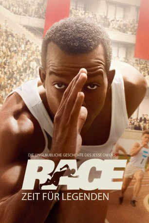
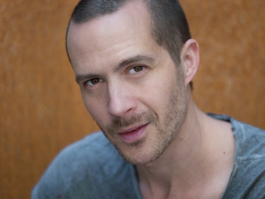
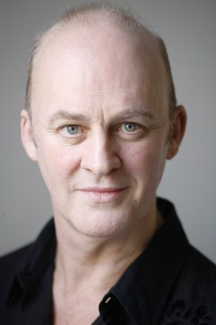
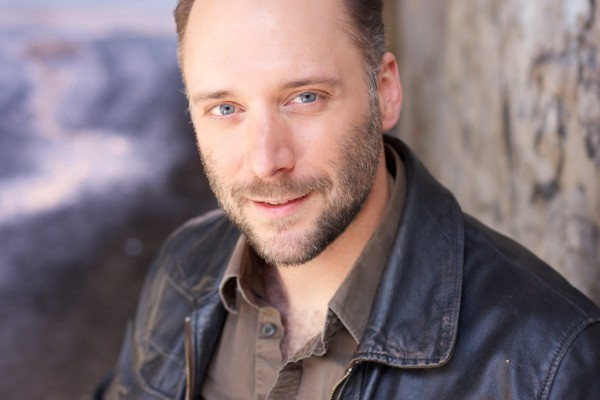

#5251 Zeit für Legenden
Alternativ: Race
 
 IMDB-Wertung: 7.1 / 10
IMDB-Wertung: 7.1 / 10  Metascore: 0
Metascore: 0 
Ohio, 1934. Der schwarze Ausnahme-Athlet Jesse Owens trainiert unter seinem Coach Larry Snyder, der ihn auf die Olympischen Spiele in Berlin vorbereiten will. Sportlich läuft es perfekt für Jesse, der immer wieder Bestzeiten läuft – aber der Trubel um seine Person macht ihm zu schaffen. Zwei Jahre später hat er mit Snyders Hilfe rechtzeitig für Olympia zu innerer Stärke gefunden. Als Jesse jedoch erfährt, dass die Nazis die Olympischen Spiele für Ihre rassistische Propaganda nutzen wollen, erwägt er, sie zu boykottieren. Doch letztlich trifft er die einzig richtige Entscheidung: Er reist nach Berlin – und macht die Spiele nicht nur zu seinem persönlichen sportlichen Triumph, sondern sorgt für eine herbe Niederlage f��r Hitlers Nazi-Regime...
Jahr: 2016
Dauer: 117 Minuten
FSK:
Land: Kanada Studio: SquareOne EntertainmentTonspuren: DTS - ,
Untertitel: Deutsch,
Auflösung: 1080p (1920x808) Größe: 6348 MB
Genre: Drama, Sport, Biographie
Regisseur:  Stephen Hopkins
Stephen Hopkins
Drehbuch: Jo Baier
Soundtrack:
Darsteller:
 Stephan James als Jesse Owens
Stephan James als Jesse Owens Jason Sudeikis als Larry Snyder
Jason Sudeikis als Larry Snyder- Eli Goree als Dave Albritton
- Shanice Banton als Ruth Solomon
 Carice van Houten als Leni Riefenstahl
Carice van Houten als Leni Riefenstahl Jeremy Irons als Avery Brundage
Jeremy Irons als Avery Brundage William Hurt als Jeremiah Mahoney
William Hurt als Jeremiah Mahoney David Kross als Carl 'Luz' Long
David Kross als Carl 'Luz' Long Jonathan Higgins als Dean Cromwell
Jonathan Higgins als Dean Cromwell Tony Curran als Lawson Robertson
Tony Curran als Lawson Robertson Amanda Crew als Peggy
Amanda Crew als Peggy-  Barnaby Metschurat als Joseph Goebbels
- Chantel Riley als Quincella
- Shamier Anderson als Eulace Peacock
- Jesse Bostick als Ken Seitz
 Moe Jeudy-Lamour als Mel Walker
Moe Jeudy-Lamour als Mel Walker- Jeremy Ferdman als Marty Glickman
- Giacomo Gianniotti als Sam Stoller
-  Tim McInnerny als Charles Sherrill
 Jonathan Aris als Alfred J. Lill
Jonathan Aris als Alfred J. Lill Nicholas Woodeson als Fred Rubien
Nicholas Woodeson als Fred Rubien Larry Day als Francis Schmidt, football coach
Larry Day als Francis Schmidt, football coach- Jon McLaren als Trent, Ohio quarterback
- Michèle Lonsdale Smith als Emma Owens, mother
 Andrew Moodie als Henry Owens, father
Andrew Moodie als Henry Owens, father- Bruno Bruni Jr. als Hans Ertl
 Glynn Turman als Harry E. Davis
Glynn Turman als Harry E. Davis- Manuel Sinor als Starter Franz Miller
 Anthony Sherwood als Reverend Ernest Hall
Anthony Sherwood als Reverend Ernest Hall Karl Graboshas als Adolf Dassler
Karl Graboshas als Adolf Dassler- Daniel Harroch als Desk Clerk, Nebraska hotel
- Matt Keyes als Reporter
 Steffen Mennekes als Reporter
Steffen Mennekes als Reporter Ricky Watson als Reporter
Ricky Watson als Reporter- Milo Larratt als Kid, in Hotel Commodore elevator
- Tim Post als Phil Diamond, head timer Ferry Field
 John Maclaren als Announcer, Ferry Field
John Maclaren als Announcer, Ferry Field Lucinda Davis als Beauty Parlor Boss
Lucinda Davis als Beauty Parlor Boss- Yvanna-Rose Leblanc als Gloria Owens, 4 Years Old
 Jeff Burrell als U.S. Radio Announcer
Jeff Burrell als U.S. Radio Announcer- Andrea Carter als Local Girl #2
-  Carlo Mestroni als Announcer, boxing match
- Jonathan David Bedard als University of Mississippi Athlete , uncredited
 Karen Belfo als Jewish Mother , uncredited
Karen Belfo als Jewish Mother , uncredited Mark Falvo als Reporter , uncredited
Mark Falvo als Reporter , uncredited- Nina Lauren als Laurel Girl , uncredited
- Laurean Adrian Parau als University of South Carolina Athlete , uncredited
- Kristina Sandev als MoCap , uncredited
- Sylvia Stewart als Beauty Parlor Patron , uncredited
 Vlasta Vrana als St-John
Vlasta Vrana als St-John
Datei: X:\2016(N-Z)\Zeit für Legenden (2016, FSK, 1920x808).mkv seit 04.01.2017
Festplatte: HD 2016(A-Z)
 Es gibt insgesamt 182 Filme in der Gruppe '2016(N-Z)'
Es gibt insgesamt 182 Filme in der Gruppe '2016(N-Z)'